1. 성남 붙박이장 슬라이딩도어 수리 현장 성남시 현장에서 붙박이장 슬라이딩도어 롤러 교체 작업을 진행했습니다. 작업 전에는 문 전체 모습과 내려앉은 위치를 확인해 문짝 간섭과 레일 이탈 여부부터 살폈습니다. 붙박이장 슬라이딩도어는 상부와 하부 롤러 상태에 따라 움직임이 크게 달라집니다. 이번 현장은 롤러가 파손되면서 문...
이번 작업의 확인 포인트
문 처짐과 레일 간섭을 확인하고 파손되거나 마모된 롤러를 교체한 뒤 문짝 높이와 좌우 간격을 맞춥니다.

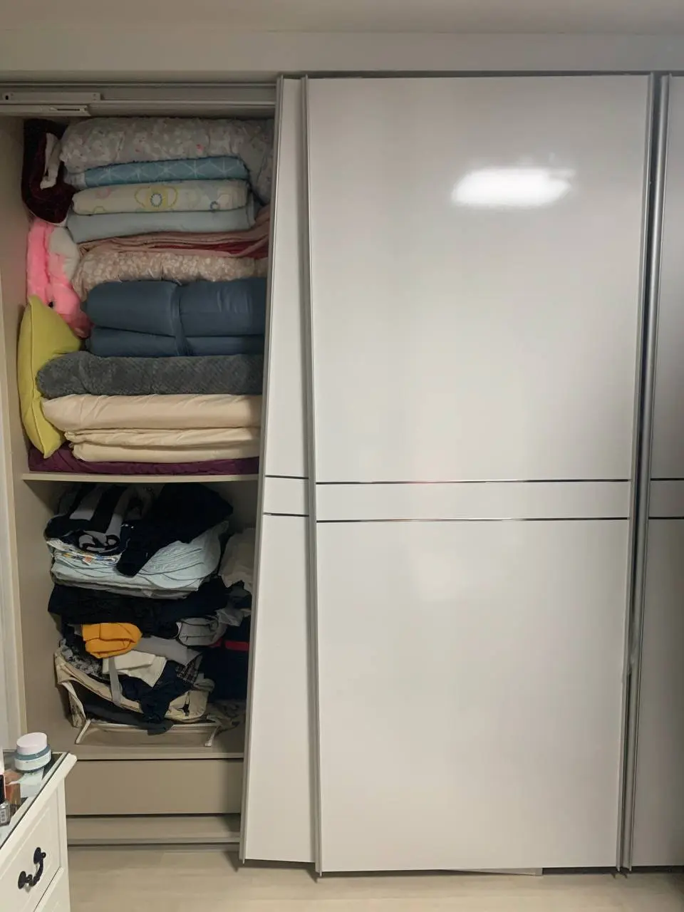
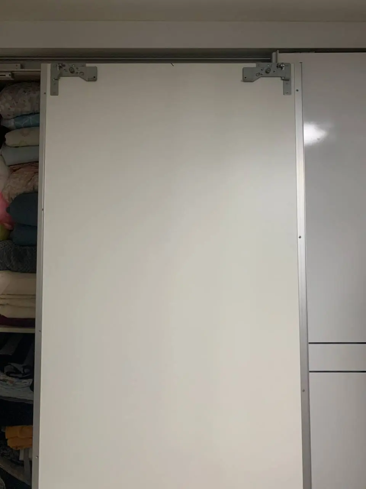
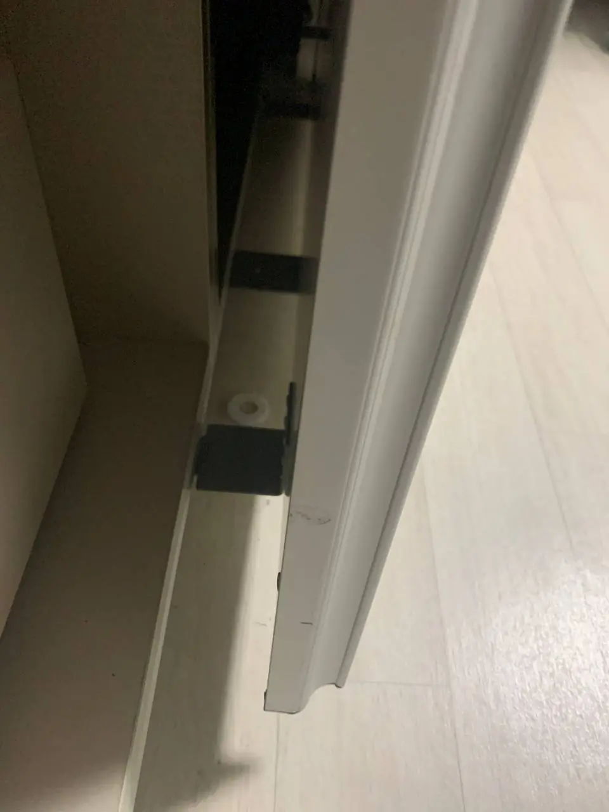
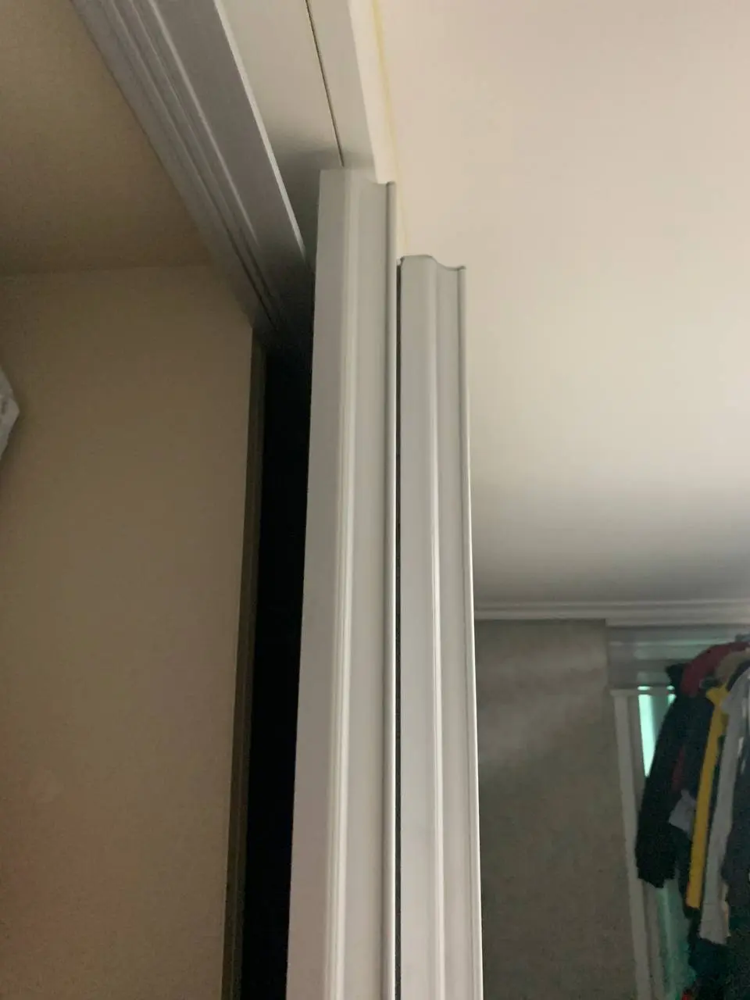
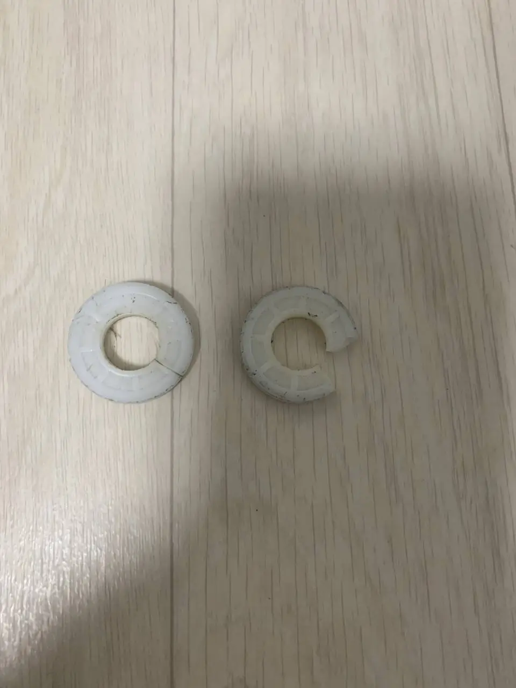
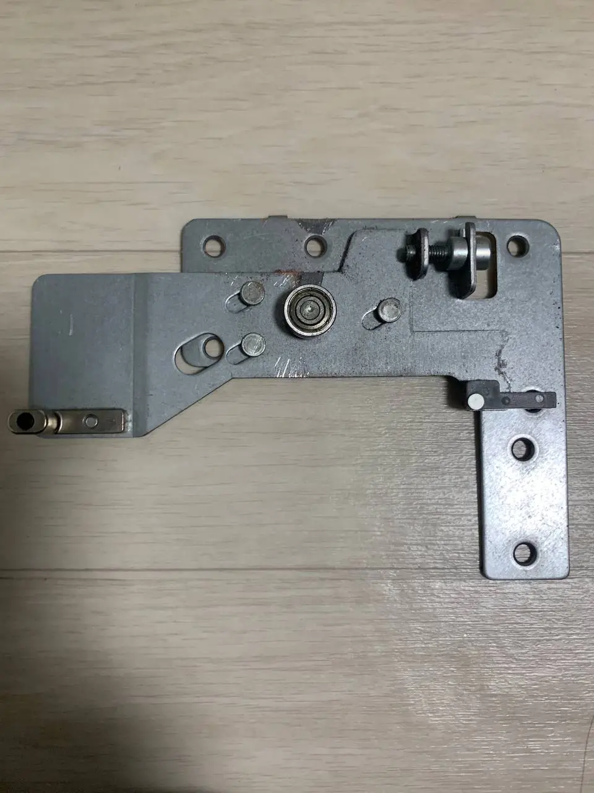
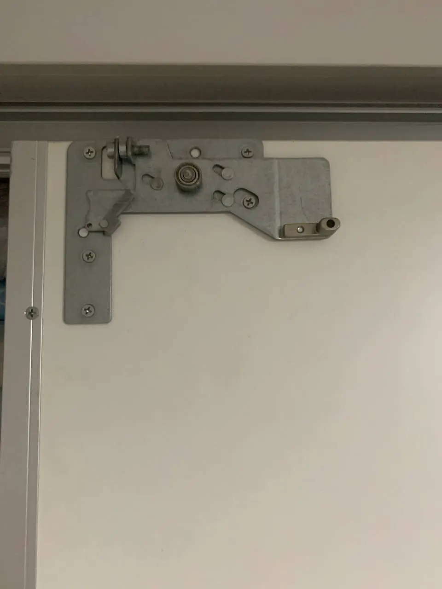
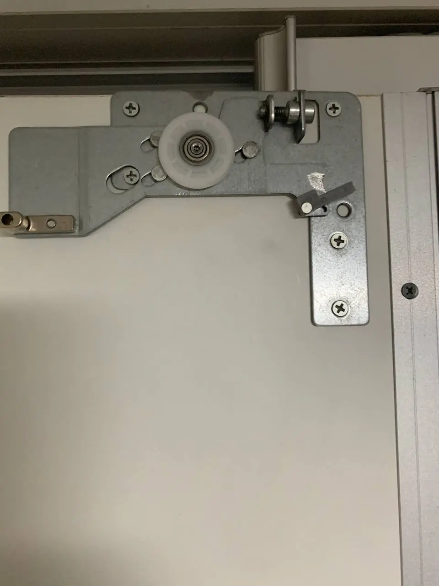
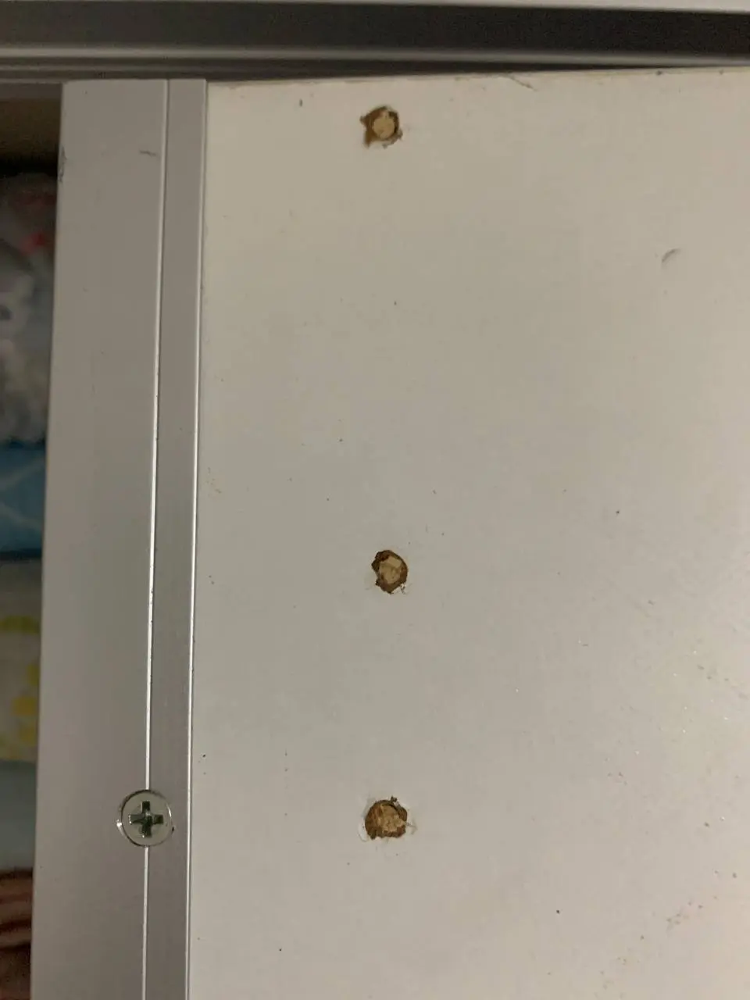
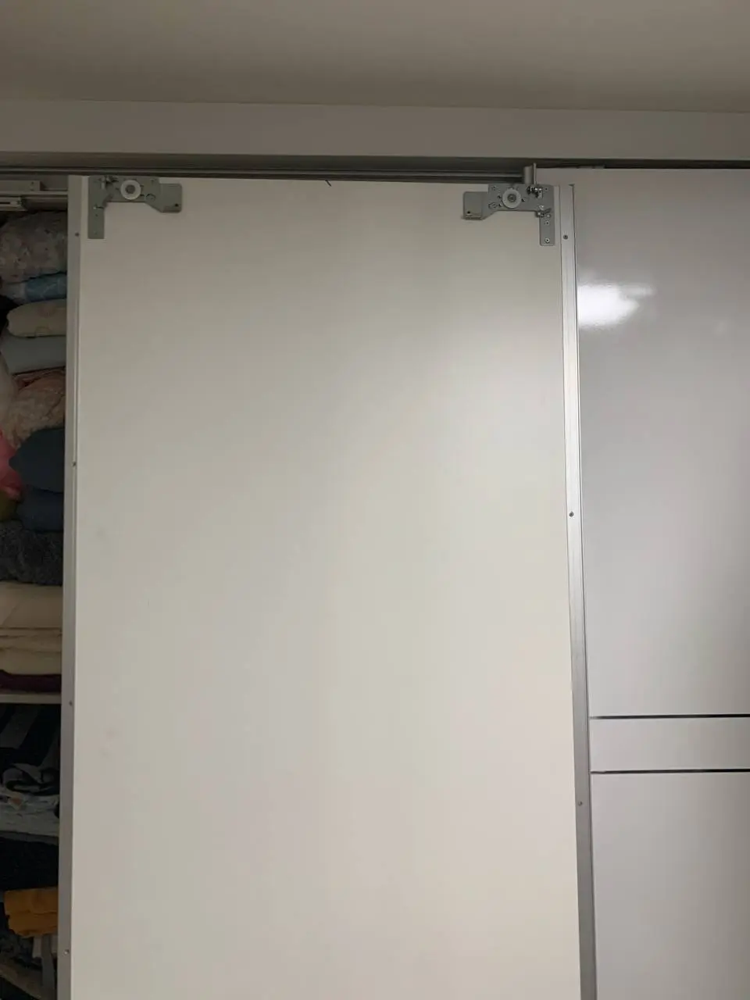
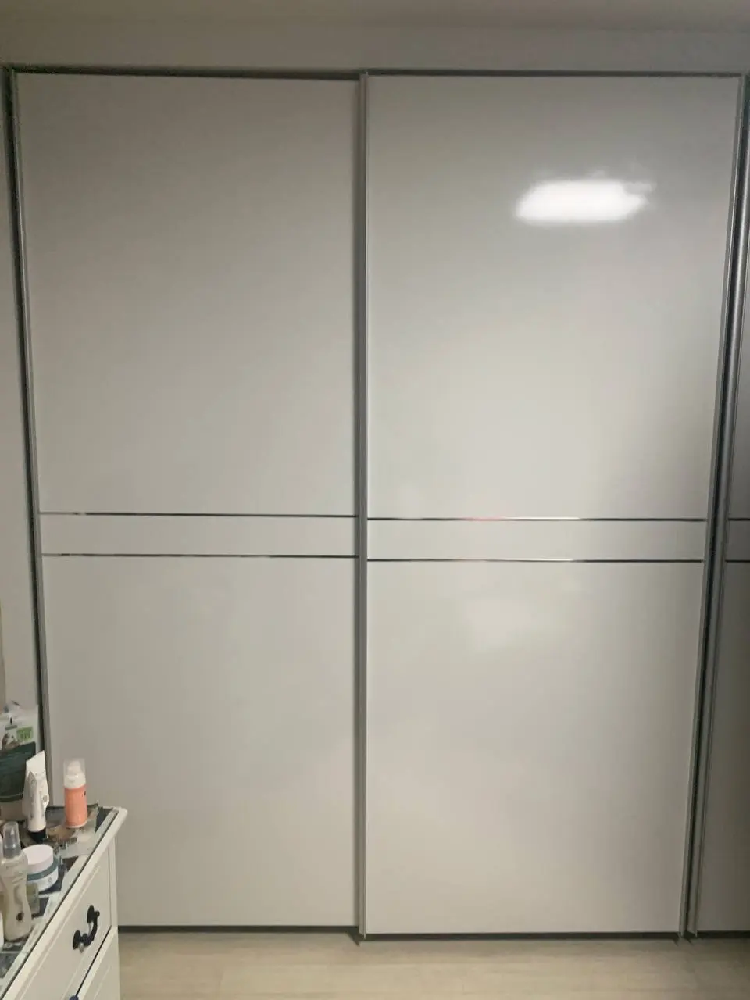
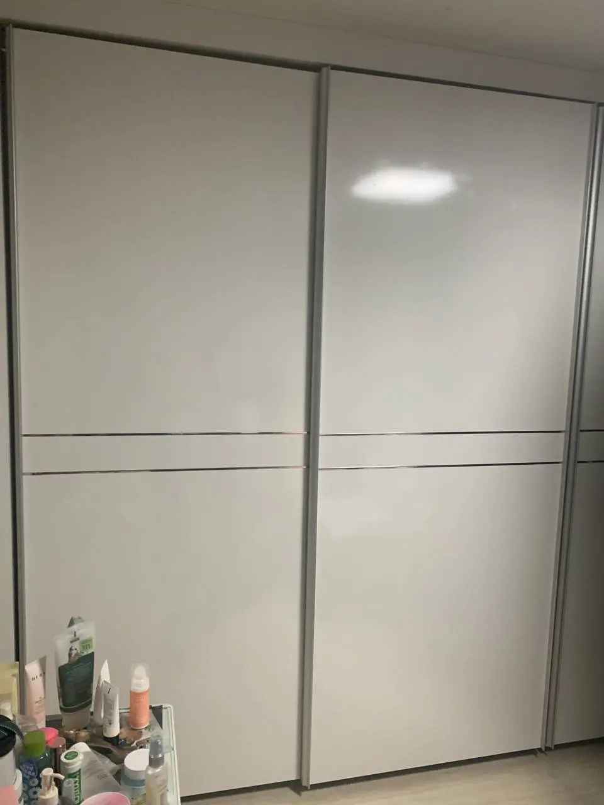
1. 성남 붙박이장 슬라이딩도어 수리 현장
성남시 현장에서 붙박이장 슬라이딩도어 롤러 교체 작업을 진행했습니다. 작업 전에는 문 전체 모습과 내려앉은 위치를 확인해 문짝 간섭과 레일 이탈 여부부터 살폈습니다.
붙박이장 슬라이딩도어는 상부와 하부 롤러 상태에 따라 움직임이 크게 달라집니다. 이번 현장은 롤러가 파손되면서 문이 레일에 끼고 한쪽으로 내려앉아 열고 닫기가 어려운 상태였습니다.
2. 문짝 분리와 부속 상태 확인
문짝이 내려앉은 상태에서 억지로 밀거나 당기면 레일이 휘거나 문짝 모서리가 손상될 수 있습니다. 먼저 문짝을 안전하게 분리한 뒤 롤러 체결부와 레일 주변을 가까이 확인해 교체가 필요한 부속을 구분했습니다.
사진에는 붙박이장 전체 상태, 문짝 측면의 부속 위치, 분리한 롤러 어셈블리 순서로 담았습니다. 전체 사진과 근접 사진을 함께 보면 문이 걸린 위치와 부속 손상을 비교하기 쉽습니다.
3. 파손 롤러 교체와 문짝 높이 조정
파손된 롤러를 분리하고 규격에 맞는 부속을 체결한 다음 문짝이 레일 위에서 정상적으로 움직이도록 높이와 좌우 간격을 맞췄습니다. 교체 부속만 끼우는 데서 끝내지 않고 기존 체결 위치와 주변 간섭도 함께 확인했습니다.
롤러 교체 후 문짝 간격이 맞지 않으면 한쪽으로 다시 쏠리거나 걸릴 수 있습니다. 그래서 문을 설치한 뒤에는 상·하부 레일의 이탈 여부와 문짝 사이 간격을 차례로 점검했습니다.
4. 재설치와 작동 마감 확인
문짝을 레일에 다시 설치하고 여러 차례 열고 닫으면서 걸림, 쏠림, 이탈이 없는지 확인했습니다. 마지막 사진에서는 두 문짝의 높이와 맞물림이 고른지, 닫힌 상태가 나란한지 확인할 수 있습니다.
슬라이딩도어가 갑자기 무거워지거나 한쪽이 내려앉고, 움직일 때 반복해서 걸리는 느낌이 난다면 롤러나 레일 손상을 의심할 수 있습니다. 추가 손상이 생기기 전에 작동을 멈추고 상태를 확인하는 편이 좋습니다.
5. 사진과 영상 상담 안내
마지막 영상에는 롤러 교체와 정렬을 마친 뒤 슬라이딩도어가 레일을 따라 움직이는 상태를 담았습니다. 사진에서 확인하기 어려운 걸림과 소리는 짧은 작동 영상으로 함께 확인하면 상담이 더 정확해집니다.
문의 시에는 붙박이장 전체 모습, 문이 내려앉은 부분, 상·하부 레일과 롤러 근접 사진을 보내주세요. 문을 움직일 때 소리가 나거나 걸린다면 짧은 영상도 함께 보내주시면 필요한 점검 범위를 빠르게 안내해 드리겠습니다.